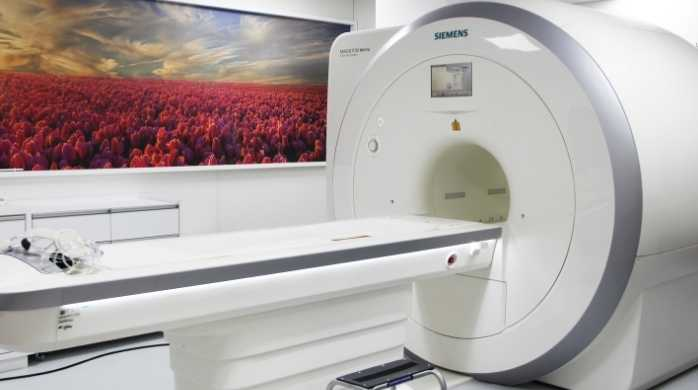
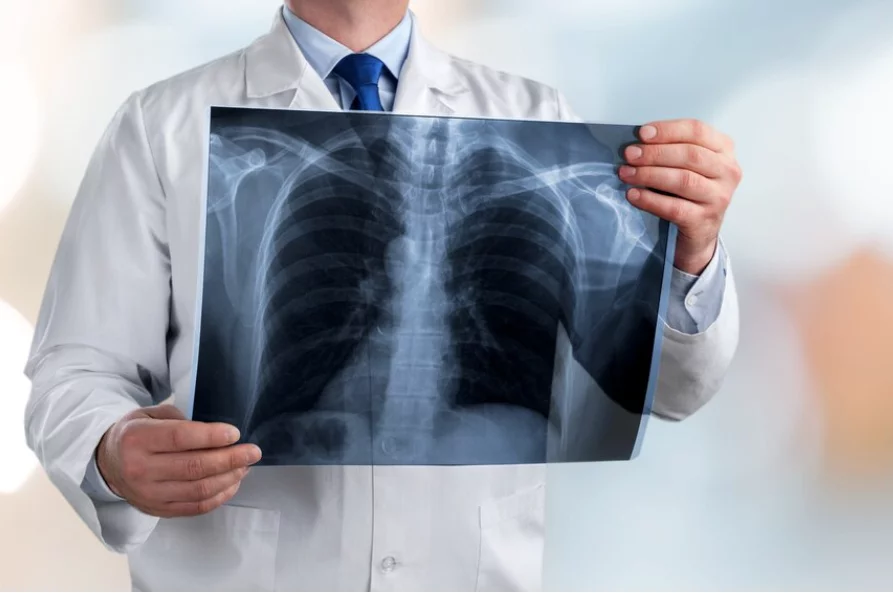
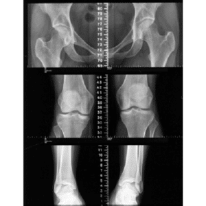
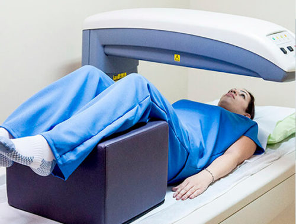
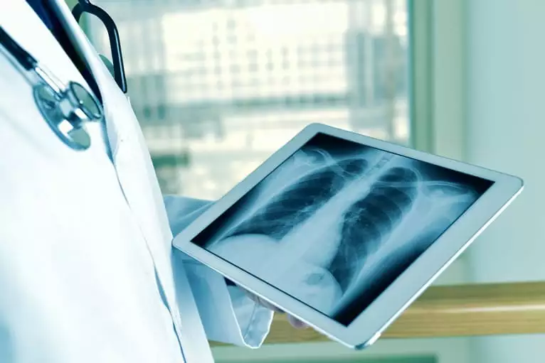
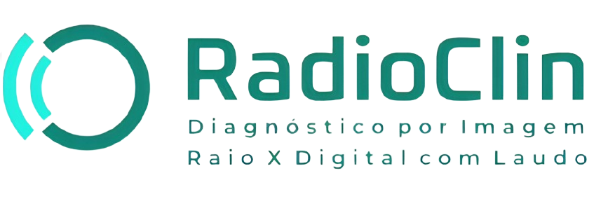
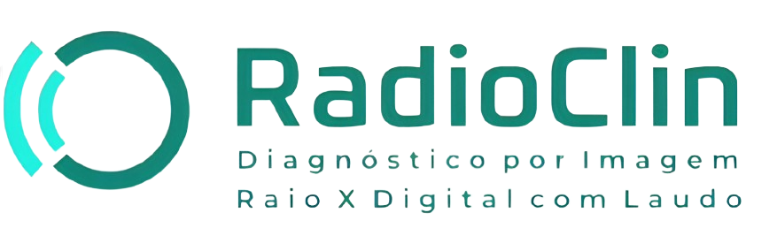

Nossos raios X revelam mais do que imagens, revelam saúde.
Estamos orgulhosos de nos apresentar como uma referência na área da
radiologia, oferecendo soluções inovadoras e avançadas em diagnóstico
por imagem. Como uma equipe de profissionais dedicados e experientes,
buscamos constantemente superar as expectativas de nossos pacientes,
fornecendo serviços de alta qualidade e precisão. Nosso compromisso é
garantir a total satisfação dos nossos clientes, oferecendo cuidados
excepcionais e resultados confiáveis. Estamos empenhados em servir à
comunidade local e contribuir para o avanço da medicina diagnóstica.

Nossos serviços
Raio-x OIT
Escanometria
Densitometria óssea
Raio-x digital com laudo

Na nossa clínica estamos comprometidos em fornecer um atendimento
excepcional aos nossos pacientes. Utilizamos os equipamentos mais
avançados e tecnológicos disponíveis no mercado para garantir
diagnósticos precisos e confiáveis. Cada um desses serviços é
realizado por nossa equipe altamente qualificada e dedicada, que se
esforça para garantir que cada paciente receba o cuidado
personalizado de que precisa.
 
